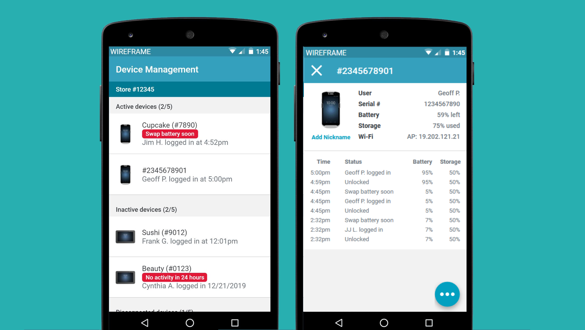

Find my device turned fleet management
Project
In an effort to modernize day-to-day activities in the stores, business gave them handheld and tablet devices. Handhelds had been going missing at an alarming rate. They looked like phones, which meant they were very attractive for thieves and had a small form factor, so were easily misplaced by well-meaning employees. Over the two years that the modernization project had been active, the company had lost several hundred thousand dollars worth of devices.
- My role: Lead UX designer
- Team: Product owner, architect, lead developer, researcher, ui designer
Objective
Business objective
- Decrease the number of missing devices and save the company money by creating a find my device tool
UX objective
- Find a way to preemptively avoid device loss
- Create a find my device tool
Work
During previous research outings to the stores, we had heard many comments from the stores about their devices. In general, they didn't really see what was so special about the devices. The lack of training left stores unable to understand exactly everything that the devices were capable of; they saw the devices as smaller telxon (scanner) guns. They treated them the same as well. No one ever wanted to steal the old telxon guns, so store employees would leave the handheld devices out on carts or shelves during their tasks.
Compounding all these problems was a lack of accountability. These devices were communal and did not require a login to access. Store employees did not feel responsible for these devices and there was no way to make them responsible for the devices.
We introduced our architect, dev team, and UI designer to the project early on so that we could brainstorm and provide feedback on all of those concepts. Before we got attached to any one idea, we wanted to confirm that it was possible using the infrastructure and devices available to us.

Ultimately, we recommended the project in phases:
- Phase 0: Paper sign-out sheet
- Phase 1: Find My Device MVP release
- Phase 2: Devices full release
Phase 0: Paper sign-out sheet
Many stores had already created their own version of the sign out sheet. We provided a version that would standardize the process across the chain.

Phase 1: Find My Device MVP release
This was the meat of what our business partners wanted. The app listed the devices in a single store and allowed a team member to tap a button that would make a specific device ring. The device would ring for five minutes or until the ringtone was deactivated from the now-found device.


Phase 2: Devices full release

To try and promote ownership of and responsibility for the devices, we wanted the team members to have a set of tools that would allow them to manage their devices. At a glance, they could see all of their devices in the store, just like in the MVP, but the full release added:
- Who logged into and out of the device and when
- The battery level of the device
- The storage capacity of the device
- What Wi-Fi access point it was attached to
- The ability to nickname devices
The first four features were utility based: They allowed team members to better manage the devices they had and also provided a paper trail. If your name was attached to the device and that device went missing, you would be the one in trouble for it. The final feature, adding a nickname to devices, also promoted ownership: It's much harder to get rid of something you've named.


We brought out a prototype to the stores to get feedback. Certain features were tightened up, others added to the backlog. Overall, the store employees seemed happy with the new tool.


End result
After 4 months:
- Used to find over 21,000 devices
- Helped to avoid over $1,000,000 in replacement costs
- Favorite nicknames include: “El Diablo,” “The Hammer,” and “Don’t Lose Me”
Reflection
It was a lot of work to get the project to a state to present to business, but when we did, they were floored. We were able to address the problem and explain why we thought that our proposed design would be an even better solution. We had a story to tell and research to back up the story, as well as a timeline of when we could expect said story to be completed. After the success of this project, I used it as a template for all projects going forward.
Of all the projects I've ever done in my career, this project has come closest to my ideal process. We were able to use research to inform our opinions around a business request, create a solution that addressed the request and then some, design a progressively more complex tool through several phases, and confirm our designs through in-store research. If only all projects could be like this.